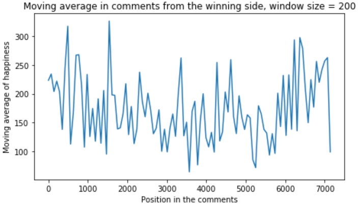
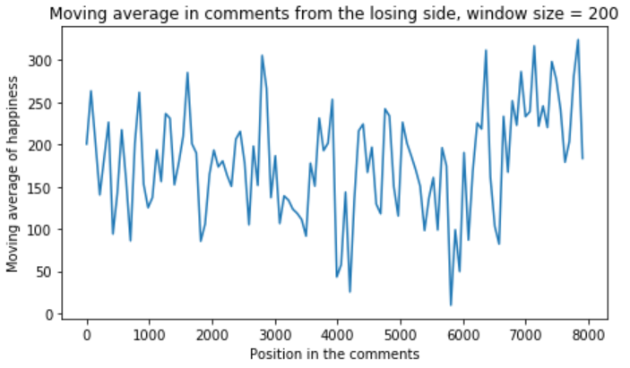

Winning makes you happier
But... Does it?
Does Dota make your life happier? Is winning satisfying? We looked at the representative words present on the chat for both the winning and the losing side and compared them, in order to find out!
After dividing the messages into two halfs, to the comments of the winners and losers, we counted the sentiment in each word present. The sentiment values were taken form the Temporal Patterns of Happiness and Information in a Global Social Network: Hedonometrics and Twitter. This dataset gives us a dictionary of words, with a value of happiness attached to each of them. The happiness values were gathered from measurements.
At first let's take a look at the happiness levels of the winners' comments. This is done by calculating all the happiness values of all the words in pieces of 200 words a time. The result is:
Then we did the same with the loser's comments...
As we can see from the results the values are really close for both cases. Our expectation was that we will be able to clearly see the difference of the heights of the values, but the data is quite noisy, this does not gives us a good comparision. Let's try differently.
We calculated the average happiness value for both cases. The results are:
| Winners average happiness | Losers average happiness |
|---|---|
| 2.55686644051 | 2.49209798995 |
The difference is really small. It's only 2.3%. This is not enough to confidently say that winning makes you happier. Therefore according to our research, sadly there is no evidence in the chat section of a game that would prove that winning dota 2 games makes your life happier...